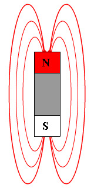

PHYSICS 30
Unit 6: Forces and Fields
Unit Themes and Emphases
- Energy and Matter
- Nature of Science
- Scientific Inquiry
Focussing Questions
- How was the value of the elementary charge determined?
- What is the relationship between electricity and magnetism?
- How does magnetism assist in the understanding of fundamental particles?
- How has this understanding revolutionized the modern way of life?
Unit B: Forces and Fields
Themes: Energy and MatterOverview: In this unit, students investigate electric and magnetic forces and fields and their applications in technological devices.
This unit builds on:
- Science 9, Unit D: Electrical Principles and Technologies
- Physics 20, Unit A: Kinematics; Unit B: Dynamics; Unit C: Circular Motion, Work and Energy; and Unit D: Oscillatory Motion and Mechanical Waves
This unit prepares students for further study of electromagnetic phenomena in subsequent units and for post-secondary studies in physics. Unit B will require approximately 30% of the time allotted for Physics 30.
Focusing Questions:
- How was the value of the elementary charge determined?
- What is the relationship between electricity and magnetism?
- How does magnetism assist in the understanding of fundamental particles?
- How has this understanding revolutionized the modern way of life?
Students will:
- explain the behaviour of electric charges, using the laws that govern electrical interactions
- describe electrical phenomena, using the electric field theory
- explain how the properties of electric and magnetic fields are applied in numerous devices.
- electric charge
- conservation of charge
- Coulomb’s law
- vector fields
- electric field
- magnetic field
- electric potential difference
- interaction of charges with electric and magnetic fields
- charge quantization—Millikan’s experiment
- electromagnetic induction
B1 Students will explain the behaviour of electric charges, using the laws that govern electrical interactions.
Specific Outcomes for KnowledgeStudents will:
30–B1.1k explain electrical interactions in terms of the law of conservation of charge
30–B1.2k explain electrical interactions in terms of the repulsion and attraction of charges
30–B1.3k compare the methods of transferring charge (conduction and induction)
30–B1.4k explain, qualitatively, the distribution of charge on the surfaces of conductors and insulators
30–B1.5k explain, qualitatively, the principles pertinent to Coulomb’s torsion balance experiment
30–B1.6k apply Coulomb’s law, quantitatively, to analyze the interaction of two point charges
30–B1.7k determine, quantitatively, the magnitude and direction of the electric force on a point charge due to two or more other point charges in a plane
30–B1.8k compare, qualitatively and quantitatively, the inverse square relationship as it is expressed by Coulomb’s law and by Newton’s universal law of gravitation.
Specific Outcomes for Science, Technology and Society (STS) (Nature of Science Emphasis)
Students will:
30–B1.1sts explain that concepts, models and theories are often used in interpreting and explaining observations and in predicting future observations (NS6a)
- explain that the electric model of matter is fundamental to the interpretation of electrical phenomena
- explain that charge separation and transfer from one object to another are fundamental electrical processes
30–B1.2sts explain that scientific knowledge may lead to the development of new technologies, and new technologies may lead to or facilitate scientific discovery (ST4) [ICT F2–4.4]
- compare and contrast the experimental designs used by Coulomb and Cavendish, in terms of the role that technology plays in advancing science.
Initiating and Planning
Students will:
30–B1.1s formulate questions about observed relationships and plan investigations of questions, ideas, problems and issues
- design an experiment to examine the relationships among magnitude of charge, electric force and distance between point charges (IP–NS2)
- predict the results of an activity that demonstrates charge separation and transfer (IP–NS3) [ICT C6–4.1].
Students will:
30–B1.2s conduct investigations into relationships among observable variables and use a broad range of tools and techniques to gather and record data and information
- perform an activity to demonstrate methods of charge separation and transfer (PR–NS3)
- perform an experiment to demonstrate the relationships among magnitude of charge, electric force and distance between point charges (PR–NS2, PR–NS3) [ICT C6–4.4].
Students will:
30–B1.3s analyze data and apply mathematical and conceptual models to develop and assess possible solutions
- infer, from empirical evidence, the mathematical relationship among charge, force and distance between point charges (AI–NS2) [ICT C7–4.2]
- use free-body diagrams to describe the electrostatic forces acting on a charge (AI–NS1)
- use graphical techniques to analyze data; e.g., curve straightening (manipulating variables to obtain a straight-line graph) (AI–NS2) [ICT C6–4.3, C7–4.2].
Students will:
30–B1.4s work collaboratively in addressing problems and apply the skills and conventions of science in communicating information and ideas and in assessing results
- select and use appropriate numeric, symbolic, graphical and linguistic modes of representation to communicate findings and conclusions (CT–NS2).
General Outcome
B2 Students will describe electrical phenomena, using the electric field theory.
Specific Outcomes for Knowledge Students will:30–B2.1k define vector fields
30–B2.2k compare forces and fields
30–B2.3k compare, qualitatively, gravitational potential energy and electric potential energy
30–B2.4k define electric potential difference as a change in electric potential energy per unit of charge
30–B2.5k calculate the electric potential difference between two points in a uniform electric field
30–B2.6k explain, quantitatively, electric fields in terms of intensity (strength) and direction, relative to the source of the field and to the effect on an electric charge
30–B2.7k define electric current as the amount of charge passing a reference point per unit of time
30–B2.8k describe, quantitatively, the motion of an electric charge in a uniform electric field
30–B2.9k explain, quantitatively, electrical interactions using the law of conservation of energy
30–B2.10k explain Millikan’s oil-drop experiment and its significance relative to charge quantization.
Specific Outcomes for Science, Technology and Society (STS) (Science and Technology Emphasis) Students will:
30–B2.1sts explain that the goal of technology is to provide solutions to practical problems (ST1) [ICT F2–4.4]
- assess how the principles of electrostatics are used to solve problems in industry and technology and to improve upon quality of life; e.g., photocopiers, electrostatic air cleaners, precipitators, antistatic clothing products, lightning rods
30–B2.2sts explain that scientific knowledge may lead to the development of new technologies, and new technologies may lead to or facilitate scientific discovery (ST4) [ICT F2–4.4]
- explain, qualitatively, how the problem of protecting sensitive components in a computer from electric fields is solved.
Specific Outcomes for Skills (Science and Technology Emphasis) Initiating and Planning
Students will:
30–B2.1s formulate questions about observed relationships and plan investigations of questions, ideas, problems and issues
- evaluate and select appropriate procedures and instruments for collecting data and information and for determining and plotting electric fields (IP–ST3) [ICT C6–4.5].
Students will:
30–B2.2s conduct investigations into relationships among observable variables and use a broad range of tools and techniques to gather and record data and information
- plot electric fields, using field lines, for fields induced by discrete point charges, combinations of discrete point charges (similarly and oppositely charged) and charged parallel plates (PR–NS2).
Students will:
30–B2.3s analyze data and apply mathematical and conceptual models to develop and assess possible solutions
- analyze, quantitatively, the motion of an electric charge following a straight or curved path in a uniform electric field, using Newton’s second law, vector addition and conservation of energy (AI–NS3)
- use accepted scientific convention and express energy in terms of electron volts, when appropriate (AI–NS1)
- use free-body diagrams to describe the forces acting on a charge in an electric field (AI–NS1).
Students will:
30–B2.4s work collaboratively in addressing problems and apply the skills and conventions of science in communicating information and ideas and in assessing results
- select and use appropriate numeric, symbolic, graphical and linguistic modes of representation to communicate findings and conclusions (CT–ST2).
General Outcome
B3 Students will explain how the properties of electric and magnetic fields are applied in numerous devices.
Specific Outcomes for KnowledgeStudents will:
30–B3.1k describe magnetic interactions in terms of forces and fields
30–B3.2k compare gravitational, electric and magnetic fields (caused by permanent magnets and moving charges) in terms of their sources and directions
30–B3.3k describe how the discoveries of Oersted and Faraday form the foundation of the theory relating electricity to magnetism
30–B3.4k describe, qualitatively, a moving charge as the source of a magnetic field and predict the orientation of the magnetic field from the direction of motion
30–B3.5k explain, qualitatively and quantitatively, how a uniform magnetic field affects a moving electric charge, using the relationships among charge, motion, field direction and strength, when motion and field directions are mutually perpendicular
30–B3.6k explain, quantitatively, how uniform magnetic and electric fields affect a moving electric charge, using the relationships among charge, motion, field direction and strength, when motion and field directions are mutually perpendicular
30–B3.7k describe and explain, qualitatively, the interaction between a magnetic field and a moving charge and between a magnetic field and a current-carrying conductor
30–B3.8k explain, quantitatively, the effect of an external magnetic field on a current-carrying conductor
30–B3.9k describe, qualitatively, the effects of moving a conductor in an external magnetic field, in terms of moving charges in a magnetic field.
Specific Outcomes for Science, Technology and Society (STS) (Nature of Science Emphasis)
Students will:
30–B3.1sts explain that concepts, models and theories are often used in interpreting and explaining observations and in predicting future observations (NS6a)
- discuss, qualitatively, Lenz’s law in terms of conservation of energy, giving examples of situations in which Lenz’s law applies
- investigate the mechanism that causes atmospheric auroras
30–B3.2sts explain that the goal of technology is to provide solutions to practical problems and that the appropriateness, risks and benefits of technologies need to be assessed for each potential application from a variety of perspectives, including sustainability (ST1, ST7) [ICT F2–4.2, F3–4.1]
- evaluate an electromagnetic technology, such as magnetic resonance imaging (MRI), positron emission tomography (PET), transformers, alternating current (AC) and direct current (DC) motors, AC and DC generators, speakers, telephones
- investigate the effects of electricity and magnetism on living organisms, in terms of the limitations of scientific knowledge and technology and in terms of quality of life
30–B3.3sts explain that scientific knowledge may lead to the development of new technologies, and new technologies may lead to or facilitate scientific discovery (ST4) [ICT F2–4.4]
- describe how technological developments were influenced by the discovery of superconductivity
- investigate how nanotubes can be used to construct low-resistance conductors.
Specific Outcomes for Skills (Nature of Science Emphasis)
Initiating and Planning
Students will:
30–B3.1s formulate questions about observed relationships and plan investigations of questions, ideas, problems and issues
- design an experiment to demonstrate the effect of a uniform magnetic field on a current-carrying conductor (IP–NS2)
- design an experiment to demonstrate the effect of a uniform magnetic field on a moving conductor (IP–NS2)
- design an experiment to demonstrate the effect of a uniform magnetic field on a moving electric charge (IP–NS2).
Students will:
30–B3.2s conduct investigations into relationships among observable variables and use a broad range of tools and techniques to gather and record data and information
- perform an experiment to demonstrate the effect of a uniform magnetic field on a current-carrying conductor, using the appropriate apparatus effectively and safely (PR–NS2, PR–NS3) [ICT F5–4.2]
- perform an experiment to demonstrate the effect of a uniform magnetic field on a moving conductor, using the appropriate apparatus effectively and safely (PR–NS2, PR–NS3) [ICT F5–4.2]
- predict, using appropriate hand rules, the relative directions of motion, force and field in electromagnetic interactions (PR–NS2).
Students will:
30–B3.3s analyze data and apply mathematical and conceptual models to develop and assess possible solutions
- state a conclusion, based on experimental evidence that describes the interactions of a uniform magnetic field and a moving or current-carrying conductor (AI–NS6)
- analyze, quantitatively, the motion of an electric charge following a straight or curved path in a uniform magnetic field, using Newton’s second law and vector addition (AI–NS3) [ICT C7–4.2]
- analyze, quantitatively, the motion of an electric charge following a straight path in uniform and mutually perpendicular electric and magnetic fields, using Newton’s second law and vector addition (AI–NS3) [ICT C7–4.2]
- use free-body diagrams to describe forces acting on an electric charge in electric and magnetic fields (AI–NS1).
Students will:
30–B3.4s work collaboratively in addressing problems and apply the skills and conventions of science in communicating information and ideas and in assessing results
- select and use appropriate numeric, symbolic, graphical and linguistic modes of representation to communicate findings and conclusions (CT–NS2).
The following mathematics outcomes are related to the content of Unit B but are not considered prerequisites.
| Concept | Mathematics Course, Strand and Specific Outcome |
|---|---|
| Data Collection and Analysis | Grade 9 Mathematics, Statistics and Probability (Data Analysis), Specific Outcome 3 |
| Measurement and Unit Conversions | Mathematics 10C, Measurement, Specific Outcomes 1 and 2; Mathematics 10-3, Measurement, Specific Outcome 1; Mathematics 20-3, Algebra, Specific Outcome 3 |
| Trigonometry | Mathematics 10C, Measurement, Specific Outcome 4; Mathematics 10-3, Geometry, Specific Outcomes 2 and 4 |
| Rate and Proportions | Mathematics 20-2, Measurement, Specific Outcome 1 |
| Graph Analysis | Mathematics10C, Relations and Functions, Specific Outcomes 1, 4 and 7; Mathematics 20-3, Statistics, Specific Outcome 1 Mathematics 30-1, Relations and Functions, Specific Outcome 14 |
| Solving Equations | Grade 9 Mathematics, Number, Specific Outcome 6 Mathematics 20-1, Algebra and Number, Specific Outcome 6; Mathematics 30-2, Relations and Functions, Specific Outcome 3 |
| Scale Diagrams | Mathematics 20-2, Measurement, Specific Outcome 2; Mathematics 20-3, Geometry, Specific Outcome 2 |
| Slope | Mathematics10C, Relations and Functions, Specific Outcomes 3 and 5; Mathematics 20-3, Algebra, Specific Outcome 2 |
| Powers | Mathematics10C, Algebra and Number, Specific Outcome 3 |
Chapter 12: Properties of electric and magnetic fields apply in nature and technology
Key Concepts
- magnetic fields
- moving charges in magnetic and electric fields
- electromagnetic induction
Knowledge
- define electric current as the amount of charge passing a reference point per unit of time
- describe magnetic interactions in terms of forces and fields
- compare gravitational, electric, and magnetic fields
- describe how the work of Oersted and Faraday led to the theory relating electricity to magnetism
- describe a moving charge as the source of a magnetic field and predict the field’s orientation
- explain how uniform magnetic and electric fields affect a moving charge
- describe and explain the interaction between a magnetic field and a moving charge and a conductor
- explain, quantitatively, the effect of an external magnetic field on a current-carrying conductor
- describe the effects of moving a conductor in an external magnetic field in terms of moving charges
Science, Technology, and Society
- explain that concepts, models, and theories are often used in interpreting, explaining, and predicting observations
- explain that technology provides solutions to practical problems
- explain that scientific knowledge may lead to the development of new technologies and vice versa
Flippity Review Questions for Chapter 12

12.1 Magnetic Forces
Magnetic fieldsOutside a magnet, the magnetic field lines point away from the north pole of a magnet and toward the south pole.

The closeness of the lines represents the magnitude of the magnetic field.
| Physical system | Magnetic field (T) |
|---|---|
| Earth | 5×10-5 |
| Bar magnet | 1×10-2 |
| Sunspots | 1×10-1 |
| MRI | 15 |
| Strongest human made magnetic field | 40 |
| Magnetar (magnetic neutron star) | 1×1011 (estimated) |
In 1820 Danish professor Hans Christian Oersted noticed that the needle of a nearby compass deflected each time the circuit was switched on.
Right hand rule (RHR) thumb points in the direction of the current flow and the fingers point in the direction of the magnetic field.
Use the left hand for the field caused by moving negative charges.
Right hand positive, left hand negative
Oersted showed that magnetism and electric currents are connected. Moving electric charges produce magnetic fields.
Electromagnet – uses a current carrying coil (solenoid) to generate a magnetic field that is easy to switch on and off.
The strength of the magnetic field is increased by:
- Increasing the current through the wire.
- Increasing the number of loops in the coil.
- Decreasing the size of the loops in the coil.
- Changing the core of the coil.
Use the left hand for electron flow.
Domain theory
In ferromagnetic materials adjacent atoms align to reinforce each other. Each region of aligned atoms is called a domain. If the domains align within the material it becomes magnetic.
Non magnet – the domains are not aligned
DIAGRAM
Magnet – the domains are aligned, creating a magnetic field.
DIAGRAM
12.2 Moving Charges and Magnetic Fields
Physicists found that a charged particle (electron) traveling in a magnetic field bends.LHR – negative charges in a magnetic field
Thumb – velocity of charged particle (I)
Index finger – field (N/C)
Middle finger – force (N)
| |Fm| = qv⊥ |B| |
→
|
→
|
Left hand for negative charges.
Right hand for positive charges.
12.3 Current-carrying Conductors and Magnetic Fields
Electric current (I) – the amount of electric charge flowing past a point every second. Measured in amps (coloumb's per second).| I = | q |
| t |
| |Fm| = Il⊥ |B| |
→
|
→
|
The wire experiences a force because the magnetic field of the moving electrons in the wire interacts with the external magnetic field around the wire.
Micheal Faraday (UK) and Joseph Henry (USA) discovered that a wire in a changing magnetic field has an induced potential difference across it.
This is the generator effect.
When a wire moves through a magnetic field, a voltage is induced in the wire.
When a loop of wire moves through a magnetic field, a voltage is induced in the wire, which causes a current to flow.
In a generator a loop of wire (armature) is mechanically spun which creates a current flow. The commutator transfers the current from the armature to the external circuit.
In an electric motor, the current flows through the armature which creates a magnetic field that interacts with the motor’s magnetic field to cause the motor to rotate.
12.4 Magnetic Fields, Moving Charges, and New and Old Technologies
Lenz’ lawThe direction of a magnetically induced current is such as to oppose the cause of the current.
Program of Studies
Alberta Science 10
Program of Studies

Alberta Science 10
Program of Studies
Contact me:
BCHS Barrhead AB
Steven Montgomery
steven.montgomery@pembinahills.caBCHS Barrhead AB
Textbook
Physics 20 & 20 Textbook (2009)

Physics 20 & 20 Textbook (2009)